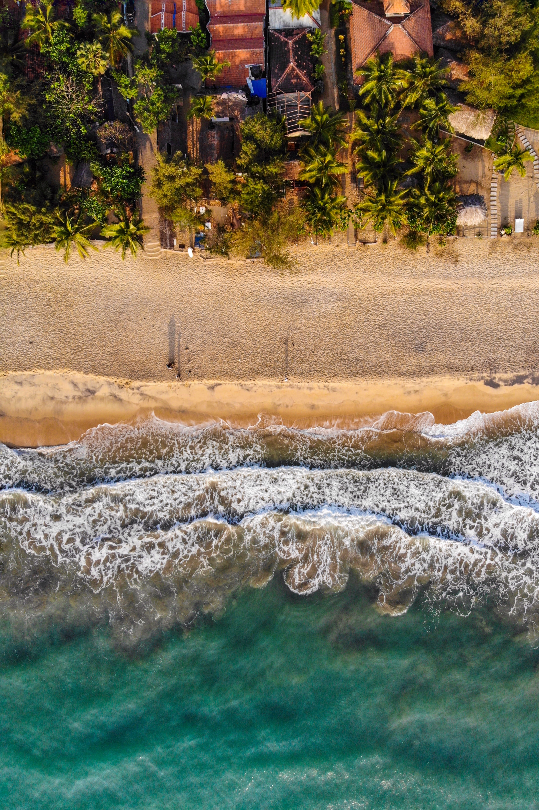
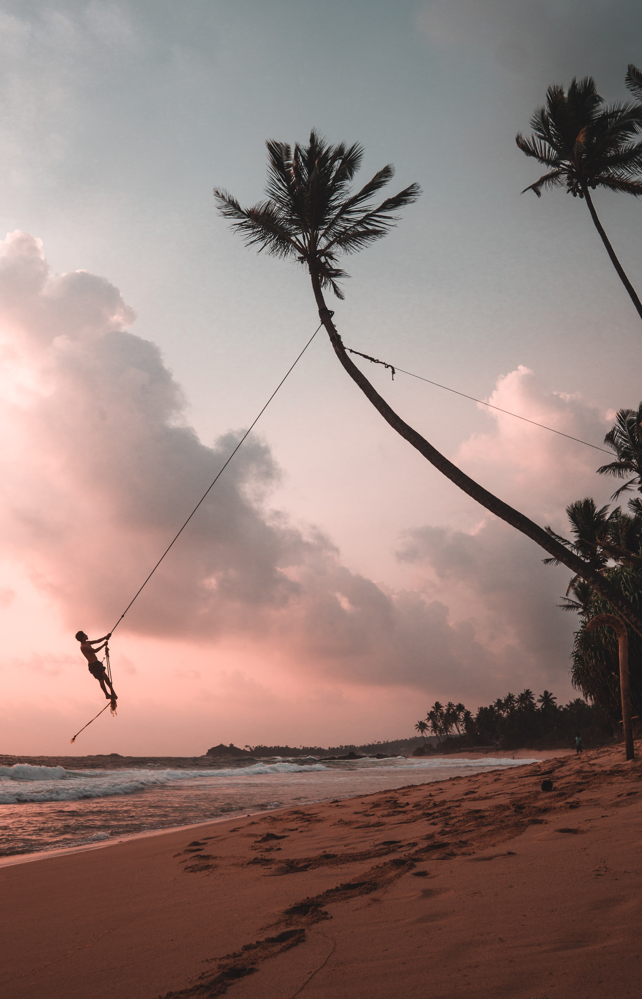

Top Beach sides in Sri Lanka

Photo by Sean Oulashin on Unsplash
Nilaveli Beach
Nilaveli Beach is a broad, sandy beach, lined with palm trees and dotted with fishermen's boats. Located on the northeast part of Sri Lanka, it's a 30-minute drive from the city of Trincomalee. This tiny island has calm beaches with gentle surf due to its own small reef. Although the beach at Nilaveli is large, it is popular with both locals and tourists. There are lifeguards on duty and many little restaurants along the beach, most specializing in seafood The Trincomalee area is also good for sightseeing, as it's a center of Tamil culture. Tamil is the name of the language spoken in Sri Lanka and the ethnic group to which the majority of its residents belong. If the isolation of Nilaveli isn't enough, you can take a boat to Pigeon Island National Park, about a half-mile off the coast. This idyllic island is best known for its snorkeling and scuba diving, and there is a good diving school near the beach, as well as a tour operator that provides guided tours of the island.The Anilana Nilaveli sits right on Nilaveli Beach, steps from the spot where boats depart for Pigeon Island. This lovely hotel offers luxury accommodations and services at affordable prices. Guest rooms are spacious and bright with floor-to-ceiling windows and private balconies, and hotel amenities include an on-site spa, two large pools, and a restaurant.

Photo by Udara Karunarathna on Unsplash
Arugam Bay Beach
Arugam Bay (Tamil: அறுகம் குடா), known locally as "Arugam Kudah", is situated on the Indian Ocean in the dry zone of Sri Lanka's southeast coast, and a historic settlement of the ancient Batticaloa Territory (Mattakallappu Desam). The bay is located 117 kilometres (73 mi) south of Batticaloa, 320 kilometres (200 mi) due east of Colombo, and approximately 4 kilometres (2.5 mi) south of the market town of Pottuvil. The main settlement in the area, known locally as Ullae, is predominantly Muslim,[1] however there is a significant Sri Lankan Tamil and Sinhala population to the south of the village, as well as a number of international expatriates, largely from Europe and Australia. While traditionally fishing has dominated the local economy, tourism has grown rapidly in the area in recent years. Arugam Kudah's literal Tamil translation is "Bay of Cynodon dactylon". Tourism in Arugam Bay is dominated by surf tourism, thanks to several quality breaks in the area, however tourists are also attracted by the local beaches, lagoons, historic temples and the nearby Kumana National Park.Arugam Bay is dramatically beautiful, with bright white sand and deep blue water gradually becoming green the closer you get to the shore. With that beauty comes some of the best surf breaks in Sri Lanka, and the beach is known as an international surf destination. This reputation brings many visitors but also means the area has a good tourist infrastructure and is easy to access. The curving beach feels a bit like a Hawaiian beach - the area near the water slopes down, and there's a dry, sandy section, then rougher areas with shrubs and a tree line.

Photo by Oliver Sjöström on Unsplash
Mirissa Beach
Mirissa (Sinhala: මිරිස්ස, romanized: Mirissa; Tamil: மிரிஸ்ஸ, romanized: Miris'sa) is a small town on the south coast of Sri Lanka, located in the Matara District of the Southern Province. It is approximately 150 kilometres (93 mi) south of Colombo and is situated at an elevation of 4 metres (13 ft) above sea level. Mirissa's beach and nightlife make it a popular tourist destination. It is also a fishing port and one of the island's main whale and dolphin watching locations.Mirissa is the largest fishing port on the south coast and sits right on the southern tip of the island. Its beauty and relative proximity to Colombo (the capital city) mean it's not hard to access. It's about a two-hour drive from the capital's airport. The small beach town and its large beach are beautiful, backed by a dense grove of palm trees. The town is on a little hill that rises up behind the beach.
Mirissa Beach is arrow-shaped, with the arrow tip sticking out into the sea. This natural jetty also makes the surf calm and good for swimming. The beaches are bright white, with soft, fine sand, and the water is crystal clear. It's light green where the bottom is sandy and dark blue where there are rocks or reef. Mirissa is also a great place if you want to do some whale watching, best done in February and March.

Photo by Alex Azabache on Unsplash
Unawatuna Beach
Unawatuna is a coastal town in Galle district of Sri Lanka. Unawatuna is a major tourist attraction in Sri Lanka and known for its beach and corals. It is a suburb of Galle, about 5 kilometres (3.1 mi) southeast to the city center and approximately 108 kilometres (67 mi) south of Colombo. Unawatuna is situated at an elevation of 5 metres (16 ft) above the sea level. Despite significant development in the last decade it is still home to the endangered and endemic purple-faced langur, an usually shy monkey species that can only be found in Sri Lanka's forests.Unawatuna and its beach are near the colonial town of Galle, which is a great city for sightseeing. Sri Lanka was formerly a colony of both Portugal and Holland (at different times), and this was the country's main city during that time. About five kilometers outside Galle, Unawatuna offers another little bit of beach paradise. The area, also a big destination for ecotourism, has a large coral reef offshore. The beach is large and curving but can be crowded as it's considered one of the country's best beach resorts. CoCo Bay Unawatuna is a well-appointed beachfront resort with its own little private section of the beach with lounge chairs.